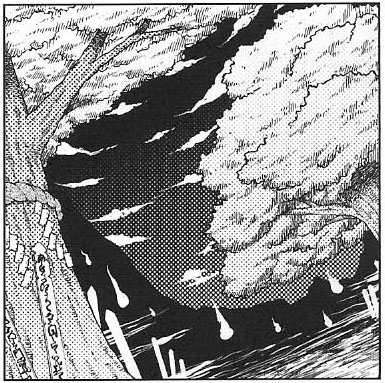
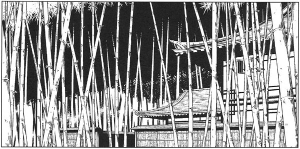

Dangerous Area Guide
Human Village

Threat level: Low
Encounterable youkai: Were-beasts, Fairies, Ghosts, etc.
The place where most of the humans in Gensokyo live.
Although many youkai also visit the village to shop, they are rarely violent, so it is a relatively relaxed place.
Everything necessary for human life is supplied here.
Moreover, as there are humans who work as youkai exterminators in the village, it is possible to lead a safe life here.
As for why there are no attacks on the human village, the truth is that it is protected by wise youkai.
As long as the humans don't leave the village, they won't meet any harm.
Even if you were to meet a youkai in the village, you should greet them respectfully as if they were your elder.
Moreover, many stores are kept open late at night, but that is when they are for the exclusive use of youkai.
Since many youkai are active at night, such stores are quite prosperous.
It is said that youkai are good customers.
It is also a common occurrence for humans and youkai to enjoy meals together, particularly in places that serve alcohol.
Hakurei Shrine

Threat level: Low
Encounterable youkai: None... supposedly
On the eastern edge of Gensokyo lies its only shrine.
This shrine exists on the border between the outside world and Gensokyo.
All of Gensokyo can be seen from this shrine, and it is famous for having the most beautiful cherry blossom trees.
The Hakurei shrine maiden, who specializes in incident resolution, lives here.
She watches over Gensokyo from here, and when an incident arises, she will go out immediately and ascertain the cause.
It's said that she resolved the recent Scarlet Mist incident.
Although normally youkai should not approach the shrine, there is a rumor that it has become a den of youkai, and that humans no longer approach.
Just as in the village, one is ensured safety from attacks by youkai while at the shrine; however, as the path between the shrine and the village is an animal trial with poor visibility, and since safety cannot be guaranteed, it has always prevented people from visiting the shrine to worship.
It has other special traits, such as items from the outside world appearing within the proximity of the shrine or people from the outside world spotted nearby.
A human being from outside will become food shortly after encountering a youkai, but if his luck is sufficient to find the shrine, they can return to their own world.
Most of the items from the outside world are mysterious, and are popular among humans and youkai alike.
For this reason, many collectors like to gather around the shrine.
However, it is said that the purpose of most of the discovered objects is unknown.
Kourindo

Threat level: Low
Encounterable youkai: Various
If you go towards the Forest of Magic from the human village, you'll see a strange building.
This building is the antique store Kourindo. There are piles of items both inside and outside that no one entirely understands, and it's so quiet and gloomy that one can't know if it's really intending to do business.
This is the sole shop in all Gensokyo that deals with outside world, youkai, netherworld and magic items.
However, not even the store owner knows how to use the outside world articles, and although there are many people interested in them, most of those items are not for sale.
None of the merchandise has price tags, so when there's something you want, you will have to bargain with the store owner.
And besides, outside items are frequently out of stock, so once they are sold you can't know when another is going to arrive.
But then again, since no one knows how to use them anyway, they end up not selling.
The owner, Rinnosuke Morichika, strangely doesn't make any distinction between humans and youkai, dealing with both of them.
In fact, he is a human-youkai half-breed himself. He doesn't attack humans, and he is not attacked by youkai either.
Even though the path from the human village to Kourindou is somewhat long with many places where youkai are likely to appear, it's difficult to visit the shop casually, but there are many surprisingly interesting items there.
If you don't interrupt the owner's stories though, he is likely to never stop.
Misty Lake

Threat level: Medium
Encounterable youkai: Fairies and youkai living by the lake, the youkai of the Scarlet Devil Mansion.
At the foot of Youkai Mountain, where humans don't usually go near, there is a big lake.
The surroundings of this lake are shrouded in mist at noon, so visibility is poor.
Near the lake fairies and youkai often gather, and, especially in summer, youkai gather there in search of a watering hole.
It is not clearly understood why it tends to be foggy just at noontime.
Since the visibility is so bad, the lake seems unbelievably huge, but it is actually believed not to be that big.
Even if you walked the full circumference around the lake it would take less than half a moment.
The lake is also famous for the giant monster fish that are caught on rare occasions on nights of the new moon.
There are many anglers that set out, dreaming of catching a monster fish like that.
The river that flows into the lake flows from Youkai Mountain.
It is said that rarely kappa will drift into the lake as well.
Such a sight would surely relax one's mind.
Bamboo Forest of the Lost

Threat level: Medium
Encounterable youkai: Beasts, others
Looking out from the human village, exactly opposite Youkai Mountain is where the expanse of the Bamboo Forest of the Lost lies.
This bamboo forest has very little in the way of landmarks, and furthermore the bamboo grows so quickly that scenery is constantly changing, thus it is certain that one will become lost.
There are no clearings there, the ground is mostly flat and indistinguishable, the bamboo grows diagonally and will drive your sense of balance insane and even when attempting to purposefully walk straight, before you know it, you'll have returned to where you just started.
Furthermore, beasts who became youkai prefer to live here in this bamboo forest. This is certainly not a place for normal humans to go.
However, it is said that there are many hidden things within this bamboo forest.
First of all, a peaceful mansion called Eientei has been confirmed to be here.
Within this mansion live extremely enigmatic humans and rabbits.
Even with these offerings, it would be best for anyone other than skilled bamboo harvesters to set foot in this bamboo forest.
Forest of Magic

Threat level: Medium
Encounterable youkai: Beasts, Magicians etc.
The most humid place in Gensokyo, this natural forest that humans rarely step foot into is the Forest of Magic.
The distance from the human village is relatively short, but the forest's environment is extremely hazardous to humans, the spores of monster mushrooms dance about in midair and a normal human breathing the air in here would cause their physical condition to worsen.
However, as the typical youkai will find the place uncomfortable, another feature of the forest that even youkai refrain from entering.
For that reason, if one could stand the noxious gasses that the monstrous mushrooms emit, then on the contrary, it would be both a safe and secretive place to seclude oneself.
The forest has areas of ground upon which the sun never shines, making them dark and damp.
Therefore, mushrooms grow endlessly there.
There are mushrooms here that can be used for food for humans who can withstand them, but they don't look very appealing. And also, there are a relatively high number of mushrooms with hallucinogenic properties.
Once again, there are a relatively high number of mushrooms with hallucinogenic properties.
The reason why it was called the Forest of Magic in the first place is because of the wide number of hallucinogenic mushrooms growing there.
Simply being near them will make hallucinations appear as if entranced by magic.
And also, for the sake of increasing their magical powers with these hallucinogenic mushrooms, there are many magicians who live in this forest.
Youkai Mountain

Threat level: High
Encounterable youkai: Tengu, Kappa etc.
A place where a great number of youkai moved in long before the time of man, Youkai Mountain.
Usually, Youkai Mountain is just referred to as "the mountain".
The youkai living here have developed their own distinct society, separate from the humans and the youkai living in the foothills, upholding one corner of Gensokyo's power balance.
In particular, the tengu and kappa on the mountain have developed technology comparable or greater than the outside world's. As such, there exists no youkai who can invade this mountain.
The youkai of the mountain treat one another, more so than any other group in Gensokyo, in the most cheerful and neighborly way. An advanced proficiency in craftsmanship combined with near-futuristic technology means that daily life is bountiful and luxurious.
However, because of that strong internal cohesion, the resistance towards outsiders can be quite formidable.
Trespassers in particular will be chased out no matter the circumstances, unleashing all available power if necessary.
Because of this, the actual state of affairs on the mountain itself is mostly a mystery.
In that place, the sun's light shines all day long, an automated factory produces the necessary items to meet the needs of everyday life, and the youkai drink sake while reading the newspaper and discussing the news. One could call it an enjoyable way of life.
Within this hollow cavity, there exists a hole that leads to somewhere in the outside world but opening it is prohibited, so other youkai and humans are not allowed to come near. That's what they say, but...
Road of Liminality

Threat level: Low
Encounterable youkai: Ghosts, Spirits, etc.
The Sanzu River flows on the other side of the mountains, but you must travel down a certain road before you get there.
That is the Road of Liminality.
If you don't go down this road, you can't reach the Sanzu River.
You can walk this road while still alive, but mainly it is the dead who travel it on their way to the river.
One might think that surely a road travelled by the dead is a lonely place, but this is not true at all. A number of stands catering to the dead are lined up along it, and it's just as busy as if it were at a shrine festival.
Living people who like festivals often come here as well.
As to the question of how a road the dead travel can have merchant stands along it, the finances of Hell had reached the point where it could no longer sustain itself merely from the ferrying fees levied on the departed, so it opened stands along the Road of Liminality in an attempt to earn some more money.
As a result, Hell can receive some money even from the dead who aren't going there, and from the living.
Sanzu River

Threat level: High
Encounterable youkai: Ghosts, Spirits, Shinigami, etc.
Gensokyo is on the side of the living, and Higan is on the opposite bank.
Many extinct fish inhabit the river, but it's said they're all ghosts
Unfortunately, you cannot catch any of them.
The river is enveloped in a deep mist, so there is no day or night.
However, the mist shines faintly.
Jagged, moss-covered rocks break the surface in a number of places, lending to the otherworldly environment.
Since it's impossible to swim across, the only way to cross the river is in a shinigami's boat.
However, the shinigami charge exorbitant fees for their services, so the living cannot cross.
Once cross the river, you cannot return until your next life.
It's likely no-one has ever crossed while still alive.
The river barely flows at all, so it's a quiet, almost silent place.
Sometimes you can hear the cheerful songs of shinigami, but no other living thing can be heard.
Strangely, even as their boats travel over the water, the water itself makes no sound.
Garden of the Sun

Threat level: Medium
Encounterable youkai: Fairies, etc.
If you go towards the heart of Gensokyo from the opposite side of mountain during summer, you'll find a meadow filled with dazzling yellow.
This field is called the Garden of the Sun, and the yellow comes from a great number of sunflowers.
The Garden of the Sun is generally in the shape of a south-facing bowl, so it's hard to see from afar.
The field is some distance away from the human village, but its beauty is worth at least a glance.
However, this sunflower field becomes a concert venue for spirited youkai at night.
If you carelessly get caught in one, you'll likely be surrounded by a great number of youkai.
The sunflowers themselves are quite ordinary, so the field is a popular sunbathing spot for fairies in the day.
Even if you came during the day, you'd be ridiculed by a great number of fairies.
I'd like to gaze at the field while hidden from far away.
The sunflowers in this field are always facing directly towards the sun, but this is just because of the fairies playing beneath the them.
Giant Toad's Pond

Threat level: Medium
Encounterable youkai: Giant Toad, others
A small pond halfway up Youkai Mountain.
The entrance might be near, but it is difficult to get to since it is in the middle of the mountain.
However, the water is said to hold divine powers, and is becoming an indispensable ingredient when performing Shinto rituals.
It is said that a toad large enough to swallow a human child whole lives in the pond, and that it protects the pond from those that try to desecrate it.
The giant toad won't be aggressive unless you desecrate the pond, and if you just leave an offering behind, you are said to be guaranteed a safe return trip.
The lotus flowers in the pond are beautiful, and lotus leaves and flowers floating on the surface lit by sunbeams filtered through the surrounding foliage further emphasize the mysteriousness of the pond.
A tiny shrine is built near the pond.
Who built it, when it was built and for what purpose are all already forgotten, but there are certainly humans that leave offerings at the shrine.
Seeing that offerings will immediately disappear, it is clear that something is enshrined there.
Nameless Hill

Threat level: Medium
Encounterable youkai: Fairies, Ghosts, etc.
Opposite of Youkai Mountain is a small mountain, and halfway up it is a meadow with a great number of lilies-of-the-valley.
Somehow, it is in a place hidden from the human village.
It doesn't get much direct sunlight and it's fairly windy, so it doesn't get very warm.
The reason this place is called Nameless Hill is because long ago it was a place where children were abandoned.
Young children who weren't even given names were brought here to sleep to their death among the lilies' poison.
The dead bodies were cleaned up by the youkai, so they disappeared without a trace.
However, it's said that some of the children were abducted by mischievous youkai and raised as youkai.
There are sad stories of parents not wanting to see their own children die, so they would leave them here thinking they might have a chance to live as youkai.
Perhaps because of its dark history, not many humans visit this place today.
At some point youkai stopped visiting as well, so this is a place forgotten by contemporary Gensokyo, having become "nameless" just as the term implies.
Scarlet Devil Mansion

Threat level: High
Encounterable youkai: Vampires, Magicians, etc.
A red, European-style mansion with few windows built on a bank of Misty Lake.
It is the house where a well-known devil lives.
Since the mansion was moved from the outer world, it clashes badly with the surrounding scenery.
The residents of the mansion also have a different culture from that of most humans and youkai, and live bustling, flamboyant lives.
A large quantity of maids live and work in the mansion, and although they handle the cleaning, cooking, washing and patrolling, it is said not many of the maids are actually useful.
The Scarlet Devil Mansion also has a basement, which is larger than it appears, and complicated.
There are also many rooms without windows inside, which complicate it further.
In the basement is the great library which is said to be the largest in Gensokyo.
But, it is not open to the public and no one is sure what kind of books are there.
On the roof is a large clock tower with a bell, which only rings at night.
Because the mansion is only active at night.
Netherworld

Threat level: High
Encounterable youkai: Ghosts, Spirits, etc.
After death, humans pass through the Road of Liminality, cross over the Sanzu River, and receive the Yama's judgment. Depending on the severity of their crimes, they are sent to Hell, to the Netherworld, to Heaven or to other places.
Among those, the Netherworld is a world where the guiltless dead spend their time as ghosts, until they achieve nirvana or reincarnate.
Different from the desolate Hell, it is calm, though it has various seasons. It is filled with beautiful cherry blossoms in spring, and dyed with beautiful red leaves in autumn.
However, the bugs, birds and animals are basically dead.
Without any sort of cry, they fly in the sky silently and splendidly.
Because it is so beautiful, many ghosts stay there forgetting nirvana or reincarnation.
Of course, most people are the dead in this world, but recently a hole opened in the barrier between the Netherworld and real world, and it became easier to come and go.
The Netherworld is a notable place for people in the know for their cherry blossom viewing parties.
Also, there is an unbelievably huge manor named Hakugyokurou in the Netherworld.
It is a beautiful structure, surrounded by walls and stairs with using designs from the continent, and has a Japanese-style residence and Zen garden at its highest level.
Hakugyokurou

Threat level: High
Encounterable youkai: Ghosts, Spirits, etc.
In the Netherworld, there exists a mansion with an unbelievably huge garden known as Hakugyokurou.
This is the home of the Saigyouji family, and it's garden contains an innumerable number of cherry trees.
Usually open to the public, the garden is often full of ghosts that come to savor its elegance.
The Saigyouji family is a special family in the Netherworld, a distinguished family that is permitted eternal residence along with the cherry trees of the Netherworld.
They manage the spirits of the Netherworld from Hakugyokurou.
As the inside of the building is generally not open to the public, not much is known about it, but it's said that the inner sanctuary is surrounded by a large, U-shaped rock garden.
The reception hall opens out onto a garden covered in gravel with magnificent pine trees and further back beyond a short fence it is possible to see a vast orchard of cherry trees.
From the hall, with the floor, walls and ceiling cut out, the scene looks like a great folding screen.
The view outside from here in the spring is said to be out of this world.
Eientei

Threat level: High
Encounterable youkai: Beasts, etc.
A mysterious manor built deep in the bamboo forest, as if to hide it.
The building is built like an ancient Japanese manor, but it shows no signs of wear.
It is as if it is constantly being maintained, or as if time has stopped.
As it's deep within the bamboo forest, you likely won't be able to find it even if you want to visit.
Only recently have there been people willing to guide others to the manor.
Before then, nobody knew that there was a mansion in the middle of the forest.
As a result, the mansion is shrouded in mystery.
There is very little publicly-known information about the place. Even basic things like when it was built and the inhabitants themselves are unknown.
In particular, the humans and youkai rabbits who live there seem to have no relations with the human village.
However, by holding recent events such as the Lunar Capital Exhibition, it seems this manor may be opening up little by little.
Capital of the Moon

Threat level: Unknown
Encounterable youkai: Unknown
This isn't located in Gensokyo, but I'm writing about it due to its close relation to Eientei.
The capital of the moon is said to be a great, ancient metropolis on the far side of the moon.
According to the stories about the Genso-Lunar War, this is the city that the youkai of Gensokyo invaded.
It's understood from what records are left from that time that their civilization is extremely advanced.
It is essentially impossible to get to the lunar capital now, but we can gather something about the current state of the lunar capital from the exhibitions held at Eientei.
The lunar citizens possess weapons with a firepower that far surpasses anything here on Earth.
Indeed, in light of such things as medicines that can cure all illnesses and lengthen lifespans, or sauces that can make dumplings ten times as flavorful, it's clear that not just their weaponry, but the whole of their civilization is more advanced than that of Gensokyo.
It's unknown how long the citizens of the moon have been living there, but it's said that they live forever.
The people of the moon consider the Earth to be a residence for the corrupted, and it's said that they use the Earth as a prison for those who commit serious crimes.
Road of Reconsideration

Threat level: High
Encounterable youkai: Ghosts, Spirits, etc.
Going through and beyond the Forest of Magic, one will come to a small road.
If one were to proceed along this road, they would finally reach Muenzuka.
When autumn comes around, the road becomes completely covered with higan flowers, dyeing the road a deep red.
Muenzuka is a graveyard for those without relatives and those who committed suicide in the outside world, a place where many end up after wandering aimlessly.
This area is a place where even the humans living on the furthest outskirts of Gensokyo never approach, for the strong connection between that and the outside world can create openings at any time.
As those who've committed suicide walk along this path when it is covered with higan flowers, the toxins will swirl around their bodies, something wondrous yet unpleasant takes place, in that their will to survive will become rejuvenated.
And then, deciding to try once more, they will turn and retrace their steps.
This is why this road has been called the "Road of Reconsideration."
Once again, this road is a place where encountering a human from the outside world is very likely.
Because of this, there are also nasty youkai who lie in wait, hoping for a meal.
Muenzuka

Threat level: Extremely High
Encounterable youkai: Ghosts, Spirits, etc.
Heading further along the Road of Reconsideration, one would reach Muenzuka, where the road ends.
Although it's a small area enclosed by trees, this is the most dangerous place for both the humans and youkai of Gensokyo.
Although this place is a graveyard for those without relatives, many of those were from the outside world, but became lost and ended up here, and the growing inclination towards the outside world has begun to gradually loosen the magic barrier.
However, there are lovely things called purple cherry blossoms trees. Although their numbers are small, nothing else in Gensokyo can match their simple beauty.
When the flowers of these cherry blossoms fall, the deceased of Muenzuka will be released from their hestitation, and will finally progress to the Road of Liminality.
The purple cherry blossoms purify the soil of Muenzuka, and once per year this severing of doubts and fears causes the flowers to blossom, and even for Gensokyo, this is a quite a peculiar youkai cherry tree.
Those flower petals that drop by ones and twos create a sight reminiscent of something like Muenzuka itself weeping, an illusion that will beguile any viewer.
This might be the most perfect place for flower viewing, or so one might think, but the sorrowful sights create such sadness that there is no one who is able to make merry while watching them.
Higan

Threat level: Unknown
Encounterable youkai: Unknown
The other side of the Sanzu River.
Obviously Higan is not part of Gensokyo, but I'll introduce it here anyway.
Compared to the Netherworld where the living can come and go relatively easily, the living cannot go to Higan because of the Sanzu River.
Higan is a endless flower garden where there is no night nor day nor seasons, just a gentle warm light that envelops the whole of the land.
All people do here is to await the Enma's judgement.
They don't sleep, eat or talk. All they do is wait, and by doing so they realize that they are dead.
It's okay if you are sent to the Netherworld, but if you descend into Hell you'll fall outside the circle of transmigration and shall never enjoy the sights of cherry blossoms and the taste of sake again.